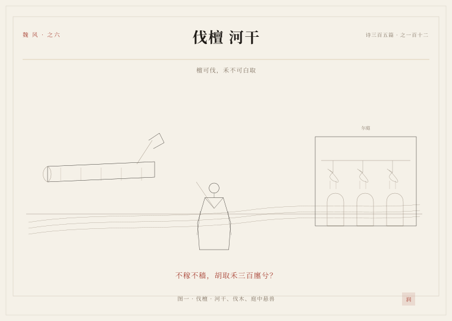
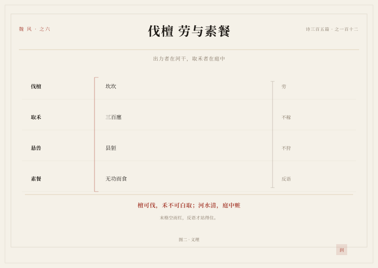

第一百十二篇 伐檀
魏风 · 之六 SJ112
朗读 · 普通话
依经文原文朗读，章次不读出；配古琴底乐，不改速、不加拖腔。全库同一音色（豆包 TTS），非播音员录制。
一 解题
诗三判：
- 谁在说：魏国伐木者。坎坎伐檀，置于河干；眼见河水清涟，庭中却悬着猎物、仓里堆着禾。
- 说什么事：三章只换檀/辐/轮、干/侧/漘、涟/直/沦、廛/亿/囷、貆/特/鹑、餐/食/飧。伐木者出力，不伐木者取禾。
- 为何编在此：111 写民散，112
写“贪”。民已散，赋仍重；此诗把“不劳而食”摆在河干上。
《毛序》：“《伐檀》，刺贪也。在位贪鄙，无功而受禄，君子不得进仕尔。”
朱子《诗集传》：“赋也。坎坎，伐木声。檀，木名。干，涯也。猗，叹词。廛，一家之居也。貆，貉类。素餐，无功而食也。”
本库的看法：《伐檀》是一首把“劳”写成“问”的诗。
伐檀、伐辐、伐轮，是实工；河水清涟、清直、清沦，是实景。“不稼不穑，胡取禾三百廛？”“不狩不猎，胡瞻尔庭有县貆？”两问把“无功受禄”摆到眼前。
末句“彼君子兮，不素餐兮”是反语：那些君子，不正是白吃吗？
断语：檀可伐，禾不可白取；河水清，庭中赃。
先辨五事：“廛”是一家之居/一夫之田，不是“三百间房”；“亿”是十万/盈数，不是“一亿”；“囷”是圆仓，不是“囤积”；“素餐”是无功而食，不是“吃素”；“君子”在此是反语，不是赞词。
二 经文
第一章
坎坎伐檀兮，置之河之干兮，河水清且涟猗。
不稼不穑，胡取禾三百廛兮？
不狩不猎，胡瞻尔庭有县貆兮？
彼君子兮，不素餐兮！
第二章
坎坎伐辐兮，置之河之侧兮，河水清且直猗。
不稼不穑，胡取禾三百亿兮？
不狩不猎，胡瞻尔庭有县特兮？
彼君子兮，不素食兮！
第三章
坎坎伐轮兮，置之河之漘兮，河水清且沦猗。
不稼不穑，胡取禾三百囷兮？
不狩不猎，胡瞻尔庭有县鹑兮？
彼君子兮，不素飧兮！
分章：三章，章九句。
三 韵读
- 一章：檀、干、涟、廛、貆、餐，元部；“餐”收，反语落。
- 二章：辐、侧、直、亿、特、食，职部；“食”收，短促。
- 三章：轮、漘、沦、囷、鹑、飧，文部；“飧”收，更沉。
读法：三章一韵到底，只换字；换字不换调，问句越问越硬。
四 字义与名物
- 坎坎：伐木声。檀：檀木，坚韧，可作车。干：河岸。涟：水纹。
- 辐：车轮的辐条。侧：水边。直：水流平直。轮：车轮。漘：水边。
- 稼：种谷。穑：收谷。胡：何。
- 廛：一家之居，引申为一夫之田；亿：十万，盈数；囷：圆仓。
- 狩：冬猎；猎：夜猎/猎取。县：悬。貆：貉类；特：三岁兽/牡兽；鹑：鹌鹑。
- 素餐：无功而食；素食、素飧同义。
五 今译
坎坎地伐檀，把它放在河岸，河水清清水纹回旋。不种不收，为什么取走三百家的禾？不狩不猎，为什么看见你庭中悬着貉？那些君子啊，不是白吃饭吗！
坎坎地伐辐，把它放在河侧，河水清清水流平直。不种不收，为什么取走三百亿的禾？不狩不猎，为什么看见你庭中悬着大兽？那些君子啊，不是白吃饭吗！
坎坎地伐轮，把它放在河漘，河水清清水波沦涟。不种不收，为什么取走三百仓的禾？不狩不猎，为什么看见你庭中悬着鹌鹑？那些君子啊，不是白吃饭吗！
六 章旨
- 一章：写“伐檀”与“取禾”。出力者在河干，取禾者在庭中。
- 二章：写“伐辐”与“取禾”。从木到车，从禾到亿，取愈多。
- 三章：写“伐轮”与“取禾”。从车到轮，从禾到囷，取愈尽。
- 总收：劳者愈劳，食者愈素；一问到底，反语作结。
七 诗教
- 赋：直陈伐木、河景、庭中悬兽；赋到“胡取”“胡瞻”，问就出来。
- 观：观“无功受禄”。不稼不穑、不狩不猎，却禾满庭悬；这是制度之贪，不是一人之贪。
- 群：伐檀者与“君子”相对；一在河干，一在庭中，隔着一条清水。
- 怨：怨在“不素餐”三字；反语一用，怨而不骂。
八 分寸与边界
- 不可把“廛”当三百间房。它是一家之居/一夫之田；一读房间，取禾就不成赋。
- 不可把“亿”当一亿。它是十万/盈数；一读一亿，数字就失真。
- 不可把“囷”当囤积动作。它是圆仓；一读囤积，取禾就成道德形容词。
- 不可把“素餐”当吃素。它是无功而食；一读吃素，全诗就成饮食。
- 不可把“君子”当赞词。此处是反语；一读赞美，毛序“刺贪”就落空。
九 存疑
- 诗旨：毛序“刺贪，在位贪鄙，无功而受禄”；朱子“赋也”。本库从“无功受禄”读。
- “廛”：毛传“一夫之居曰廛”；一说“三百户”。从一夫之田，取禾之数才合。
- “亿”：毛传“十万曰亿”；一说“盈数”。从十万，极言其多。
- “特”：毛传“三岁曰特”；一说“牡兽”。从三岁兽，见其大。
- “素餐”：毛传“素，空也”；朱子“无功而食”。从无功而食。
十 跨典
- 《论语·宪问》：“邦有道，谷；邦无道，谷，耻也。”——无功而食之耻；此诗正写“邦无道而谷”。
- 《孟子·滕文公上》：“治于人者食人，治人者食于人。”——劳心劳力之分；此诗问的是“食于人者”凭什么。
- 《左传·襄公二十九年》：“美哉，渊乎！忧而不困者也。”——季札评魏风；伐檀之问，正是“忧而不困”。
- 《诗经·魏风·硕鼠》：“三岁贯女，莫我肯顾。”——112
问取禾，113 誓去；一问一走，魏风终。
十一 双卡与图
双卡八对：
| 廛（一夫之田） |
廛（三百间房） |
| 亿（十万） |
亿（一亿） |
| 囷（圆仓） |
囷（囤积） |
| 素餐（无功而食） |
素餐（吃素） |
| 县（悬） |
县（县衙） |
| 貆（貉类） |
貆（猪） |
| 特（三岁兽） |
特（特别） |
| 君子（反语） |
君子（赞词） |

图一 · 伐檀 河干、伐木、庭中悬兽

图二 · 伐檀 劳与素餐
读图三处：
- 河干：图一左河岸、清水三波、倒木一株；不画全河，只画干与涟。
- 伐者：只画背影、斧、手，不画脸；劳在斧上，不在表情。
- “素餐”在右：图二左“伐檀/取禾/悬兽”三实，右“素餐”一格空而红；空一格，反语才站得住。